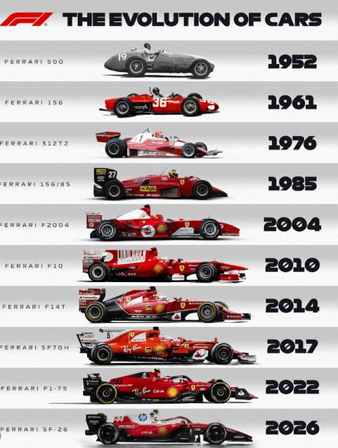

1950: el comienzo
En 1950 comenzó el Campeonato Mundial de Pilotos de Fórmula 1. Desde sus primeras temporadas, la categoría reunió a fabricantes y pilotos en circuitos de diferentes países.
La categoría ha evolucionado gracias al talento de los pilotos, los avances tecnológicos y los cambios en las reglas de competición.
Desde las primeras carreras hasta los monoplazas actuales, cada época ha dejado avances importantes en el automovilismo.

En 1950 comenzó el Campeonato Mundial de Pilotos de Fórmula 1. Desde sus primeras temporadas, la categoría reunió a fabricantes y pilotos en circuitos de diferentes países.
Los equipos desarrollaron nuevas soluciones aerodinámicas y mecánicas. La innovación y las rivalidades deportivas ayudaron a aumentar el interés por la categoría.
La electrónica, la simulación y el análisis de datos adquirieron una mayor importancia en el desarrollo de los vehículos y en la preparación de las carreras.
La seguridad, la eficiencia energética y la tecnología siguen siendo aspectos centrales en la evolución de los monoplazas y de la competición.
La Fórmula 1 continúa adaptándose a nuevos reglamentos y avances tecnológicos. Su historia muestra cómo la competición impulsa el desarrollo de soluciones cada vez más complejas.
Conocer las escuderías